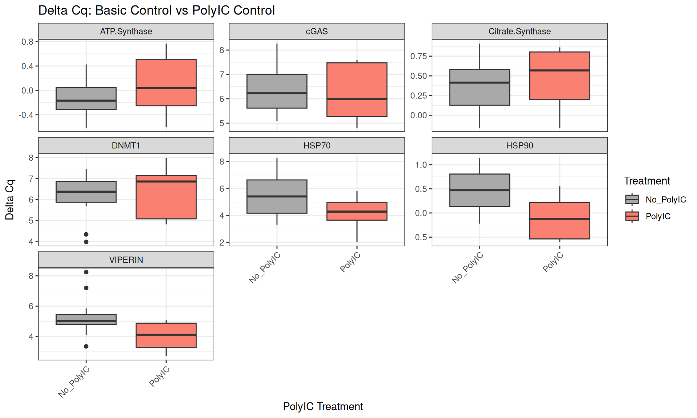
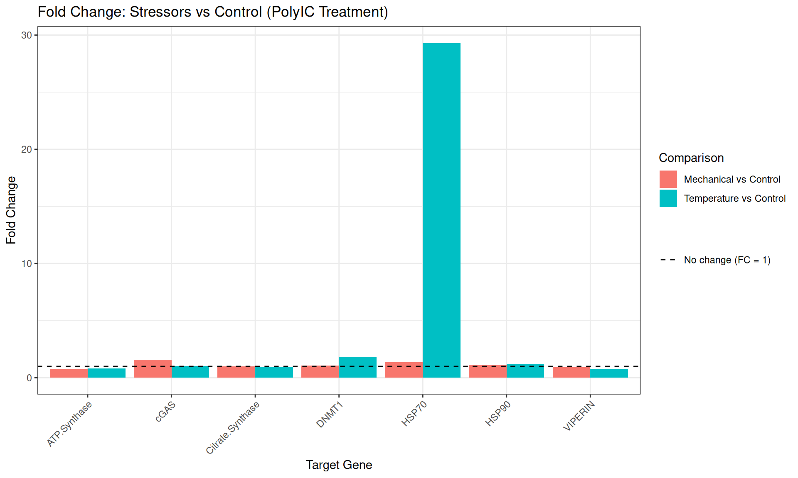
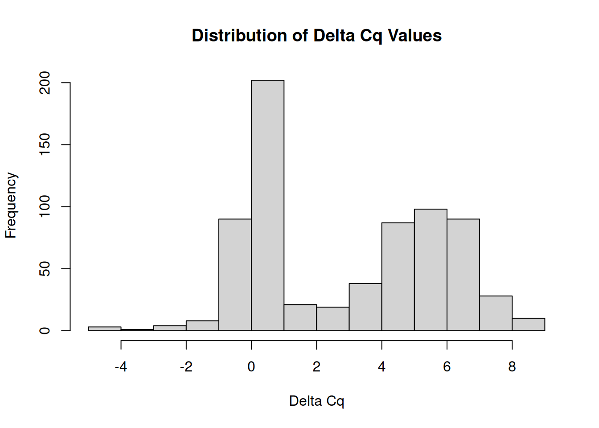

qPCR Analysis - M.gigas PolyIC Data from Valentinas Project
2026
qPCR
Pacific oyster
Magallana gigas
Crassostrea gigas
Author
Sam White
Published
February 2, 2026
INTRO
This is an analysis of qPCR data from Magallana gigas (Pacific oyster) samples treated with PolyIC (a synthetic analog of double-stranded RNA that mimics viral infection) and subjected to different stress types (Temperature, Mechanical, Control). The goal was to assess gene expression changes in response to these treatments.
The qPCR data was generated by me on January 27-29, 2026, as part of Valentina’s project on immune responses in oysters. Eight genes were targeted: ATP Synthase, Citrate Synthase, DNMT1, HSP70, HSP90, cGAS, and VIPERIN. GAPDH was used as the normalizing gene. Notebook entries documenting the qPCR runs and data exports can be found in the following posts:
# Combine plate replicates for each genecitrate_synthase <-bind_rows(citrate_synthase_01, citrate_synthase_02, citrate_synthase_03)DNMT1 <-bind_rows(DNMT1_01, DNMT1_02, DNMT1_03)cGAS <-bind_rows(cGAS_01, cGAS_02, cGAS_03)ATP_synthase <-bind_rows(ATP_synthase_01, ATP_synthase_02, ATP_synthase_03)GAPDH <-bind_rows(GAPDH_01, GAPDH_02, GAPDH_03)HSP70 <-bind_rows(HSP70_01, HSP70_02, HSP70_03)HSP90 <-bind_rows(HSP90_01, HSP90_02, HSP90_03)VIPERIN <-bind_rows(VIPERIN_01, VIPERIN_02, VIPERIN_03)# Combine all genes into single dataframeqpcr_data <-bind_rows( citrate_synthase, DNMT1, cGAS, ATP_synthase, GAPDH, HSP70, HSP90, VIPERIN)str(qpcr_data)
'data.frame': 2246 obs. of 16 variables:
$ X : logi NA NA NA NA NA NA ...
$ Well : chr "A01" "A02" "A03" "A04" ...
$ Fluor : chr "SYBR" "SYBR" "SYBR" "SYBR" ...
$ Target : chr "Citrate.Synthase" "Citrate.Synthase" "Citrate.Synthase" "Citrate.Synthase" ...
$ Content : chr "Unkn-01" "Unkn-01" "Unkn-01" "Unkn-02" ...
$ Sample : chr "A1C" "A1C" "A1C" "A2C" ...
$ Biological.Set.Name : logi NA NA NA NA NA NA ...
$ Cq : num 24.1 24 23.8 25.1 24.7 ...
$ Cq.Mean : num 23.9 23.9 23.9 24.9 24.9 ...
$ Cq.Std..Dev : num 0.147 0.147 0.147 0.208 0.208 ...
$ Starting.Quantity..SQ.: num NaN NaN NaN NaN NaN NaN NaN NaN NaN NaN ...
$ Log.Starting.Quantity : num NaN NaN NaN NaN NaN NaN NaN NaN NaN NaN ...
$ SQ.Mean : num NaN NaN NaN NaN NaN NaN NaN NaN NaN NaN ...
$ SQ.Std..Dev : num NaN NaN NaN NaN NaN NaN NaN NaN NaN NaN ...
$ Set.Point : int 60 60 60 60 60 60 60 60 60 60 ...
$ Well.Note : logi NA NA NA NA NA NA ...
# Remove rows with Sample name "NTC" or empty/NA Sample namesqpcr_data <- qpcr_data %>%filter(Sample !="NTC"&!is.na(Sample) & Sample !="")str(qpcr_data)
'data.frame': 2222 obs. of 16 variables:
$ X : logi NA NA NA NA NA NA ...
$ Well : chr "A01" "A02" "A03" "A04" ...
$ Fluor : chr "SYBR" "SYBR" "SYBR" "SYBR" ...
$ Target : chr "Citrate.Synthase" "Citrate.Synthase" "Citrate.Synthase" "Citrate.Synthase" ...
$ Content : chr "Unkn-01" "Unkn-01" "Unkn-01" "Unkn-02" ...
$ Sample : chr "A1C" "A1C" "A1C" "A2C" ...
$ Biological.Set.Name : logi NA NA NA NA NA NA ...
$ Cq : num 24.1 24 23.8 25.1 24.7 ...
$ Cq.Mean : num 23.9 23.9 23.9 24.9 24.9 ...
$ Cq.Std..Dev : num 0.147 0.147 0.147 0.208 0.208 ...
$ Starting.Quantity..SQ.: num NaN NaN NaN NaN NaN NaN NaN NaN NaN NaN ...
$ Log.Starting.Quantity : num NaN NaN NaN NaN NaN NaN NaN NaN NaN NaN ...
$ SQ.Mean : num NaN NaN NaN NaN NaN NaN NaN NaN NaN NaN ...
$ SQ.Std..Dev : num NaN NaN NaN NaN NaN NaN NaN NaN NaN NaN ...
$ Set.Point : int 60 60 60 60 60 60 60 60 60 60 ...
$ Well.Note : logi NA NA NA NA NA NA ...
Check for high standard deviations
Code
# Filter out rows where Cq.Std..Dev is NAqpcr_data <- qpcr_data[!is.na(qpcr_data$Cq.Std..Dev), ]# Filter rows where Cq.Std..Dev is greater than 0.5high_cq_std_dev <- qpcr_data[qpcr_data$Cq.Std..Dev >0.5, ]# Print the filtered rows with specified columns, without row namesprint(high_cq_std_dev[, c("Target", "Sample", "Cq", "Cq.Std..Dev")], row.names =FALSE)
# Group by Sample and Target, then filter out the outlier replicateqpcr_filtered <- qpcr_data %>%group_by(Sample, Target) %>%filter(n() ==1|abs(Cq -median(Cq, na.rm =TRUE)) <=0.5) %>%ungroup()str(qpcr_filtered)
tibble [2,143 × 16] (S3: tbl_df/tbl/data.frame)
$ X : logi [1:2143] NA NA NA NA NA NA ...
$ Well : chr [1:2143] "A01" "A02" "A03" "A04" ...
$ Fluor : chr [1:2143] "SYBR" "SYBR" "SYBR" "SYBR" ...
$ Target : chr [1:2143] "Citrate.Synthase" "Citrate.Synthase" "Citrate.Synthase" "Citrate.Synthase" ...
$ Content : chr [1:2143] "Unkn-01" "Unkn-01" "Unkn-01" "Unkn-02" ...
$ Sample : chr [1:2143] "A1C" "A1C" "A1C" "A2C" ...
$ Biological.Set.Name : logi [1:2143] NA NA NA NA NA NA ...
$ Cq : num [1:2143] 24.1 24 23.8 25.1 24.7 ...
$ Cq.Mean : num [1:2143] 23.9 23.9 23.9 24.9 24.9 ...
$ Cq.Std..Dev : num [1:2143] 0.147 0.147 0.147 0.208 0.208 ...
$ Starting.Quantity..SQ.: num [1:2143] NaN NaN NaN NaN NaN NaN NaN NaN NaN NaN ...
$ Log.Starting.Quantity : num [1:2143] NaN NaN NaN NaN NaN NaN NaN NaN NaN NaN ...
$ SQ.Mean : num [1:2143] NaN NaN NaN NaN NaN NaN NaN NaN NaN NaN ...
$ SQ.Std..Dev : num [1:2143] NaN NaN NaN NaN NaN NaN NaN NaN NaN NaN ...
$ Set.Point : int [1:2143] 60 60 60 60 60 60 60 60 60 60 ...
$ Well.Note : logi [1:2143] NA NA NA NA NA NA ...
Group and Summarize Data
Code
# Group by Sample and Target, then summarize to get unique rows for each samplegrouped_df <- qpcr_filtered %>%group_by(Sample, Target) %>%summarise(Cq.Mean =mean(Cq, na.rm =TRUE),Cq.Std..Dev =sd(Cq, na.rm =TRUE),.groups ='drop' )str(grouped_df)
# Calculate delta Cq by subtracting GAPDH Cq.Mean from each corresponding Sample Cq.Meandelta_Cq_df <-calculate_delta_Cq(grouped_df)# Filter out normalizing gene (GAPDH), since no need to compare normalizing gene to itselfdelta_Cq_df <- delta_Cq_df %>%filter(Target !="GAPDH")str(delta_Cq_df)
Comparison 1: Basic Control vs Stressors (No PolyIC)
Code
# Filter data for samples without PolyIC treatmentno_polyIC_data <- delta_Cq_df %>%filter(polyIC =="No_PolyIC")# Perform t-tests for each target comparing Control vs each stressorcomparison1_results <- no_polyIC_data %>%filter(stress_type %in%c("Control", "Temperature", "Mechanical")) %>%group_by(Target) %>%summarise(# Control vs Temperaturetemp_pvalue =if(sum(stress_type =="Control") >0&sum(stress_type =="Temperature") >0) {t.test(delta_Cq[stress_type =="Control"], delta_Cq[stress_type =="Temperature"])$p.value } elseNA_real_,# Control vs Mechanicalmech_pvalue =if(sum(stress_type =="Control") >0&sum(stress_type =="Mechanical") >0) {t.test(delta_Cq[stress_type =="Control"], delta_Cq[stress_type =="Mechanical"])$p.value } elseNA_real_,.groups ='drop' )print(comparison1_results)
# Identify genes with significant p-values for Temperature comparisonsig_temp_polyIC <- comparison3_results %>%filter(temp_pvalue <=0.05&!is.na(temp_pvalue)) %>%select(Target, temp_pvalue) %>%mutate(comparison ="PolyIC Control vs Temperature")# Identify genes with significant p-values for Mechanical comparisonsig_mech_polyIC <- comparison3_results %>%filter(mech_pvalue <=0.05&!is.na(mech_pvalue)) %>%select(Target, pvalue = mech_pvalue) %>%mutate(comparison ="PolyIC Control vs Mechanical")# Combine and displaysig_genes_comp3 <-bind_rows( sig_temp_polyIC %>%rename(pvalue = temp_pvalue), sig_mech_polyIC)if(nrow(sig_genes_comp3) >0) {print("Genes with p ≤ 0.05:") sig_genes_comp3 %>%mutate(pvalue =format(pvalue, scientific =TRUE, digits =3)) %>% knitr::kable()} else {print("No genes had p-values ≤ 0.05")}
[1] "Genes with p ≤ 0.05:"
Target
pvalue
comparison
HSP70
1.43e-07
PolyIC Control vs Temperature
Visualizations
Delta Cq Boxplots
Comparison 1: Control vs Stressors (No PolyIC)
Code
no_polyIC_data %>%ggplot(aes(x = stress_type, y = delta_Cq, fill = stress_type)) +geom_boxplot() +facet_wrap(~Target, scales ="free_y") +scale_fill_manual(values =c("Control"="darkgray", "Temperature"="salmon", "Mechanical"="steelblue")) +theme_bw() +labs(title ="Delta Cq: Control vs Stressors (No PolyIC Treatment)",x ="Stress Type",y ="Delta Cq",fill ="Stress Type" ) +theme(axis.text.x =element_text(angle =45, hjust =1))
Comparison 2: Control vs PolyIC Control
Code
control_data %>%ggplot(aes(x = polyIC, y = delta_Cq, fill = polyIC)) +geom_boxplot() +facet_wrap(~Target, scales ="free_y") +scale_fill_manual(values =c("No_PolyIC"="darkgray", "PolyIC"="salmon")) +theme_bw() +labs(title ="Delta Cq: Basic Control vs PolyIC Control",x ="PolyIC Treatment",y ="Delta Cq",fill ="Treatment" ) +theme(axis.text.x =element_text(angle =45, hjust =1))

Comparison 3: PolyIC Control vs PolyIC Stressors
Code
polyIC_data %>%ggplot(aes(x = stress_type, y = delta_Cq, fill = stress_type)) +geom_boxplot() +facet_wrap(~Target, scales ="free_y") +scale_fill_manual(values =c("Control"="darkgray", "Temperature"="salmon", "Mechanical"="steelblue")) +theme_bw() +labs(title ="Delta Cq: PolyIC Control vs PolyIC Stressors",x ="Stress Type",y ="Delta Cq",fill ="Stress Type" ) +theme(axis.text.x =element_text(angle =45, hjust =1))
All treatments comparison
Code
delta_Cq_df %>%ggplot(aes(x = treatment_group, y = delta_Cq, fill = polyIC)) +geom_boxplot() +facet_wrap(~Target, scales ="free_y", ncol =2) +scale_fill_manual(values =c("No_PolyIC"="darkgray", "PolyIC"="salmon")) +theme_bw() +labs(title ="Delta Cq Across All Treatment Groups",x ="Treatment Group",y ="Delta Cq",fill ="PolyIC" ) +theme(axis.text.x =element_text(angle =45, hjust =1))
Delta Delta Cq and Fold Change Analysis
Calculate delta delta Cq for each comparison
Comparison 1: Stressors vs Control (No PolyIC)
Code
# Calculate delta delta Cq for Temperature vs Control (No PolyIC)delta_delta_temp_no_polyIC <- no_polyIC_data %>%group_by(Target) %>%summarise(mean_control =mean(delta_Cq[stress_type =="Control"], na.rm =TRUE),mean_temp =mean(delta_Cq[stress_type =="Temperature"], na.rm =TRUE),delta_delta_Cq = mean_temp - mean_control,fold_change =2^(-delta_delta_Cq),.groups ='drop' )print("Temperature vs Control (No PolyIC):")
# Calculate delta delta Cq for Mechanical vs Control (No PolyIC)delta_delta_mech_no_polyIC <- no_polyIC_data %>%group_by(Target) %>%summarise(mean_control =mean(delta_Cq[stress_type =="Control"], na.rm =TRUE),mean_mech =mean(delta_Cq[stress_type =="Mechanical"], na.rm =TRUE),delta_delta_Cq = mean_mech - mean_control,fold_change =2^(-delta_delta_Cq),.groups ='drop' )print("Mechanical vs Control (No PolyIC):")
# Combine temperature and mechanical comparisonsfold_change_no_polyIC <-bind_rows( delta_delta_temp_no_polyIC %>%mutate(comparison ="Temperature vs Control"), delta_delta_mech_no_polyIC %>%mutate(comparison ="Mechanical vs Control"))fold_change_no_polyIC %>%ggplot(aes(x = Target, y = fold_change, fill = comparison)) +geom_bar(stat ="identity", position ="dodge") +geom_hline(aes(yintercept =1, linetype ="No change (FC = 1)"), color ="black") +scale_linetype_manual(name ="", values =c("No change (FC = 1)"="dashed")) +theme_bw() +labs(title ="Fold Change: Stressors vs Control (No PolyIC)",x ="Target Gene",y ="Fold Change",fill ="Comparison" ) +theme(axis.text.x =element_text(angle =45, hjust =1))
PolyIC Control vs Basic Control
Code
delta_delta_polyIC_control %>%ggplot(aes(x = Target, y = fold_change, fill = Target)) +geom_bar(stat ="identity") +geom_hline(aes(yintercept =1, linetype ="No change (FC = 1)"), color ="black") +scale_linetype_manual(name ="", values =c("No change (FC = 1)"="dashed")) +theme_bw() +labs(title ="Fold Change: PolyIC Control vs Basic Control",x ="Target Gene",y ="Fold Change" ) +theme(axis.text.x =element_text(angle =45, hjust =1))
PolyIC: Stressors vs Control
Code
# Combine temperature and mechanical comparisons for PolyICfold_change_polyIC <-bind_rows( delta_delta_temp_polyIC %>%mutate(comparison ="Temperature vs Control"), delta_delta_mech_polyIC %>%mutate(comparison ="Mechanical vs Control"))fold_change_polyIC %>%ggplot(aes(x = Target, y = fold_change, fill = comparison)) +geom_bar(stat ="identity", position ="dodge") +geom_hline(aes(yintercept =1, linetype ="No change (FC = 1)"), color ="black") +scale_linetype_manual(name ="", values =c("No change (FC = 1)"="dashed")) +theme_bw() +labs(title ="Fold Change: Stressors vs Control (PolyIC Treatment)",x ="Target Gene",y ="Fold Change",fill ="Comparison" ) +theme(axis.text.x =element_text(angle =45, hjust =1))

ANOVA Models
Run ANOVA models to test for effects of PolyIC treatment and stress type on delta Cq values for each target gene.
Code
library(car)library(emmeans)
Data distribution check
ANOVA assumes that data (or residuals) are approximately normally distributed. This histogram provides a quick visual check of the overall delta Cq distribution across all samples and targets.
What to look for: - Bell-shaped curve: Indicates roughly normal distribution, supporting ANOVA use - Skewness: Strong left or right skew may violate normality assumptions - Outliers: Extreme values far from the main distribution - Multimodal: Multiple peaks may indicate distinct subpopulations
While this shows the overall distribution, we’ll check normality of residuals for each gene-specific model using QQ plots below.
Code
hist(delta_Cq_df$delta_Cq, main ="Distribution of Delta Cq Values", xlab ="Delta Cq")

ATP Synthase
ATP synthase is an enzyme complex that functions to synthesize adenosine triphosphate (ATP) from adenosine diphosphate (ADP) and inorganic phosphate (Pi), essentially generating the cell’s primary energy currency by harnessing the energy from a proton gradient across a membrane.
# Check Levene's testlevene_p <- levene_results$`Pr(>F)`[1]if(levene_p >0.05) {cat("- **Levene's Test** (homogeneity of variance): PASSED (p =", round(levene_p, 4), ") ✓\n")cat(" → Variances are equal across groups; ANOVA is appropriate.\n")} else {cat("- **Levene's Test** (homogeneity of variance): FAILED (p =", round(levene_p, 4), ") ⚠️\n")cat(" → Variances differ across groups; ANOVA results should be interpreted with caution.\n")}
- **Levene's Test** (homogeneity of variance): FAILED (p = 0.0036 ) ⚠️
→ Variances differ across groups; ANOVA results should be interpreted with caution.
Citrate Synthase
Citrate synthase is important for energy production in the TCA cycle and is linked to the electron transport chain. It is also used as an enzyme marker for intact mitochondria.
levene_p <- levene_results$`Pr(>F)`[1]if(levene_p >0.05) {cat("- **Levene's Test** (homogeneity of variance): PASSED (p =", round(levene_p, 4), ") ✓\n")cat(" → Variances are equal across groups; ANOVA is appropriate.\n")} else {cat("- **Levene's Test** (homogeneity of variance): FAILED (p =", round(levene_p, 4), ") ⚠️\n")cat(" → Variances differ across groups; ANOVA results should be interpreted with caution.\n")}
- **Levene's Test** (homogeneity of variance): PASSED (p = 0.9559 ) ✓
→ Variances are equal across groups; ANOVA is appropriate.
DNMT1
The DNMT1 gene provides instructions for making an enzyme called DNA methyltransferase 1. This enzyme is involved in DNA methylation, which is the addition of methyl groups, consisting of one carbon atom and three hydrogen atoms, to DNA molecules.
levene_p <- levene_results$`Pr(>F)`[1]if(levene_p >0.05) {cat("- **Levene's Test** (homogeneity of variance): PASSED (p =", round(levene_p, 4), ") ✓\n")cat(" → Variances are equal across groups; ANOVA is appropriate.\n")} else {cat("- **Levene's Test** (homogeneity of variance): FAILED (p =", round(levene_p, 4), ") ⚠️\n")cat(" → Variances differ across groups; ANOVA results should be interpreted with caution.\n")}
- **Levene's Test** (homogeneity of variance): PASSED (p = 0.6172 ) ✓
→ Variances are equal across groups; ANOVA is appropriate.
HSP70
Heat Shock Protein 70 (Hsp70) is a molecular chaperone that plays crucial roles in maintaining cellular protein homeostasis and protecting cells from stress.
levene_p <- levene_results$`Pr(>F)`[1]if(levene_p >0.05) {cat("- **Levene's Test** (homogeneity of variance): PASSED (p =", round(levene_p, 4), ") ✓\n")cat(" → Variances are equal across groups; ANOVA is appropriate.\n")} else {cat("- **Levene's Test** (homogeneity of variance): FAILED (p =", round(levene_p, 4), ") ⚠️\n")cat(" → Variances differ across groups; ANOVA results should be interpreted with caution.\n")}
- **Levene's Test** (homogeneity of variance): PASSED (p = 0.7454 ) ✓
→ Variances are equal across groups; ANOVA is appropriate.
HSP90
Heat shock protein 90 (Hsp90) is a molecular chaperone that helps proteins fold, mature, and remain active. Hsp90 also helps regulate signaling networks and is involved in many cellular processes.
levene_p <- levene_results$`Pr(>F)`[1]if(levene_p >0.05) {cat("- **Levene's Test** (homogeneity of variance): PASSED (p =", round(levene_p, 4), ") ✓\n")cat(" → Variances are equal across groups; ANOVA is appropriate.\n")} else {cat("- **Levene's Test** (homogeneity of variance): FAILED (p =", round(levene_p, 4), ") ⚠️\n")cat(" → Variances differ across groups; ANOVA results should be interpreted with caution.\n")}
- **Levene's Test** (homogeneity of variance): PASSED (p = 0.9423 ) ✓
→ Variances are equal across groups; ANOVA is appropriate.
cGAS
The cGAS gene is involved in several processes, including cellular response to exogenous dsRNA, positive regulation of intracellular signal transduction, and regulation of defense response.
This analysis examined gene expression responses in Magallana gigas to PolyIC treatment (an immune stimulant mimicking viral dsRNA) and different stress types (Temperature, Mechanical, Control) using qPCR. Eight genes were analyzed: ATP Synthase, Citrate Synthase, DNMT1, HSP70, HSP90, cGAS, and VIPERIN. Expression levels were normalized to GAPDH and analyzed using two-way ANOVA (PolyIC × Stress Type) with post-hoc pairwise comparisons.
Gene-Specific Results
ATP Synthase
Function: Mitochondrial enzyme synthesizing ATP; marker of energy metabolism.
Assumption Checks: - Levene’s Test: FAILED (p = 0.0036) - variances are not homogeneous across groups ⚠️
Significant Pairwise Contrasts (p ≤ 0.05): - No_PolyIC Control vs PolyIC Mechanical (p = 0.007) - No_PolyIC Control vs PolyIC Temperature (p = 0.0001) - No_PolyIC Mechanical vs PolyIC Temperature (p = 0.0195) - No_PolyIC Temperature vs PolyIC Temperature (p = 0.0158)
Key Findings: - PolyIC treatment significantly affects ATP Synthase expression - The “stress type effect” is driven primarily by PolyIC-treated samples under stress (all significant contrasts involve PolyIC groups) - No significant differences between non-PolyIC control and non-PolyIC stressed groups - Effects are additive rather than interactive (no interaction between PolyIC and stress) - PolyIC + Temperature shows the strongest effect (lowest p-value), followed by PolyIC + Mechanical - Caveat: Heterogeneous variances suggest results should be interpreted cautiously
Citrate Synthase
Function: TCA cycle enzyme; marker of mitochondrial density and oxidative capacity.
ANOVA Results: - PolyIC effect: Not significant (p = 0.693) - Stress type effect: Marginally non-significant (p = 0.0688) - PolyIC × Stress interaction: Not significant (p = 0.464)
Key Findings: - Citrate Synthase expression is stable across PolyIC treatments - Stress type shows a trend toward significance (p = 0.0688) but does not reach the p ≤ 0.05 threshold - No significant pairwise contrasts detected (all p > 0.05) - This near-significant trend without specific contrasts suggests subtle, distributed differences across stress types rather than a strong specific effect - Mitochondrial density/function appears relatively unaffected by these experimental conditions
DNMT1
Function: DNA methyltransferase enzyme; maintains DNA methylation patterns and epigenetic regulation.
ANOVA Results: - PolyIC effect: Not significant (p = 0.193) - Stress type effect: Not significant (p = 0.179) - PolyIC × Stress interaction: Not significant (p = 0.399)
Key Findings: - DNMT1 expression does not respond significantly to PolyIC or stress treatments - DNA methylation machinery appears constitutively expressed under these conditions - No evidence of stress-induced epigenetic remodeling at the transcriptional level
HSP70
Function: Molecular chaperone; critical for protein folding and cellular stress response.
Significant Pairwise Contrasts (p ≤ 0.05): - No_PolyIC Control vs No_PolyIC Temperature (p < 0.0001) - No_PolyIC Control vs PolyIC Temperature (p < 0.0001) - PolyIC Control vs No_PolyIC Temperature (p < 0.0001) - PolyIC Control vs PolyIC Temperature (p < 0.0001) - No_PolyIC Mechanical vs No_PolyIC Temperature (p < 0.0001) - No_PolyIC Mechanical vs PolyIC Temperature (p < 0.0001) - PolyIC Mechanical vs No_PolyIC Temperature (p = 0.0017) - PolyIC Mechanical vs PolyIC Temperature (p < 0.0001)
Key Findings: - HSP70 shows extremely strong responses to both PolyIC and stress type - Temperature stress is the primary driver: All 8 significant contrasts involve temperature-stressed groups vs. non-temperature groups - Both PolyIC and non-PolyIC oysters show dramatic HSP70 upregulation under temperature stress compared to controls or mechanical stress - Mechanical stress does NOT significantly induce HSP70 (no significant Control vs Mechanical contrasts) - No interaction suggests PolyIC and temperature stress act independently (additive effects) - This is the classic heat shock protein response to thermal stress
HSP90
Function: Molecular chaperone; regulates protein maturation and signaling networks.
ANOVA Results: - PolyIC effect: SIGNIFICANT (p = 5.47e-10) * - Stress type effect: Not significant (p = 0.476) - PolyIC × Stress interaction:** Not significant (p = 0.562)
Significant Pairwise Contrasts (p ≤ 0.05): - No_PolyIC Control vs PolyIC Temperature (p < 0.0001) - No_PolyIC Mechanical vs PolyIC Temperature (p < 0.0001) - No_PolyIC Temperature vs PolyIC Temperature (p < 0.0001)
Key Findings: - PolyIC has a highly significant main effect on HSP90 expression - Unlike HSP70, the overall stress type main effect is not significant - All three significant contrasts specifically involve PolyIC + Temperature: - PolyIC Temperature differs from all three non-PolyIC groups (Control, Mechanical, Temperature) - No other treatment combinations show significant differences - The pattern shows PolyIC + Temperature creates a synergistic-like response despite the non-significant interaction term (possibly due to sample size/power) - PolyIC alone (control), temperature alone, and mechanical stress (with/without PolyIC) do NOT significantly induce HSP90 - HSP90 appears to require the combination of immune stimulation (PolyIC) AND thermal stress
cGAS
Function: Cytosolic DNA sensor; involved in innate immune response and dsRNA detection.
ANOVA Results: - PolyIC effect: Not significant (p = 0.749) - Stress type effect: Not significant (p = 0.168) - PolyIC × Stress interaction: Not significant (p = 0.831)
Key Findings: - cGAS does not respond significantly to PolyIC treatment - No significant response to stress type either - This is unexpected given cGAS’s role in detecting foreign nucleic acids - May suggest: (1) different immune sensing pathways activated, (2) timing issues (response may occur earlier/later), or (3) PolyIC recognition occurs through alternative receptors in oysters
VIPERIN
Function: Antiviral effector protein; restricts replication of DNA and RNA viruses.
ANOVA Results: - PolyIC effect: SIGNIFICANT (p = 0.000165) * - Stress type effect: Not significant (p = 0.548) - PolyIC × Stress interaction:** Not significant (p = 0.505)
Significant Pairwise Contrasts (p ≤ 0.05): - No_PolyIC Control vs PolyIC Control (p = 0.0242)
Key Findings: - VIPERIN shows a clear response to PolyIC treatment as an immune stimulant - The only significant contrast is No_PolyIC Control vs PolyIC Control (p = 0.024) - PolyIC alone is sufficient to induce VIPERIN expression - no additional stress needed - Notably, PolyIC + stress combinations (mechanical/temperature) are NOT significantly different from PolyIC control - This indicates the VIPERIN response is triggered by PolyIC recognition itself, independent of other stressors - Stress type (temperature/mechanical) does not enhance or suppress the PolyIC-induced VIPERIN response - As an antiviral effector, VIPERIN appropriately recognizes PolyIC as a viral mimic